Префектура Ямагути · Нагато · еда
Якитори Нагато: город, где курицу жарят с двух часов дня
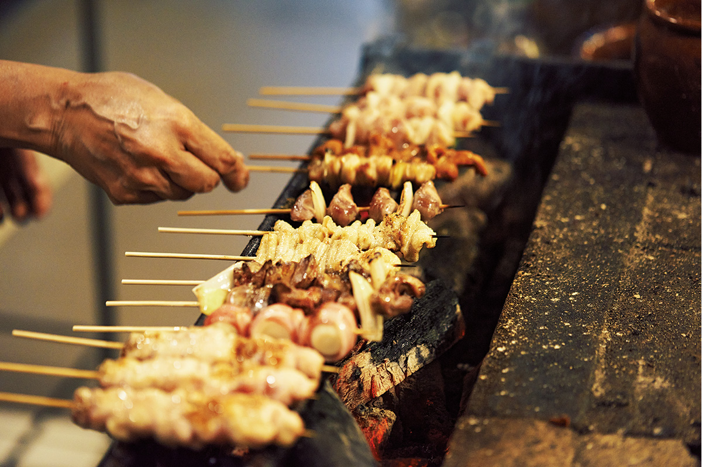
Нагато, портовый город на побережье Японского моря, называют городом якитори: закусочных на душу населения здесь больше, чем почти где-либо в стране. Объяснение, как ни странно, начинается с рыбы.
История
Как рыба привела к курице
Нагато стоит на севере префектуры Ямагути, у богатых рыбой вод Японского моря, и рыболовство веками было здесь главным делом. Из свежего улова делали рыбную пасту и знаменитое камабоко из Сэнсаки, а остатки рыбы после разделки шли на корм курам. Дешёвый и свежий корм всегда был под рукой, поэтому вокруг города выросли птицеводческие хозяйства.
В Нагато к тому же работает редкий для Японии кооператив, который занимается только птицей: «Фукагава Ёкэй». Здесь разделывают кур, и свежее мясо почти сразу попадает в городские закусочные. Отсюда и их число: по количеству якитори на 10 000 жителей Нагато входит в число лидеров страны.
Некоторые закусочные открываются уже в 14:00. Говорят, так повелось ради рыбаков: они выходят в море затемно и к середине дня уже свободны. Рыболовство дало переработку рыбы, переработка дала птицеводство, а птицеводство сделало якитори главной едой города.
Старейшая
«Якитори Комори»: с 1948 года
Среди множества закусочных Нагато «Якитори Комори» занимает особое место. Её открыли в 1948 году, вскоре после войны, и это первая закусочная якитори в городе. Сегодня за стойкой стоят внук основательницы и его жена.
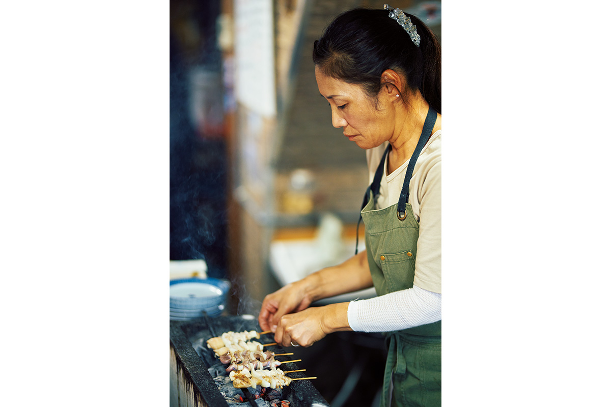
Всё, от чего зависит вкус, хозяева унаследовали от основательницы: как резать мясо вдоль волокон, как нанизывать его веером, как укладывать угли, сколько держать на огне и сколько солить. Курицу «Тёсю-дори» забивают утром, сразу после доставки её разделывают, и к 14:00 закусочная открывается. Время открытия не менялось десятилетиями, чтобы рыбаки могли зайти после работы.
«Касива», куриное мясо, получается сочным и насыщенным. «Кава», кожа с прослойкой мяса, нежная и в меру жирная. Сердечки здесь называют «торимамэ», и они упругие, с густым вкусом. Для перерыва между шпажками в меню есть вяленая мелкая рыбка «хэйтаро»: так едят только в портовом городе.
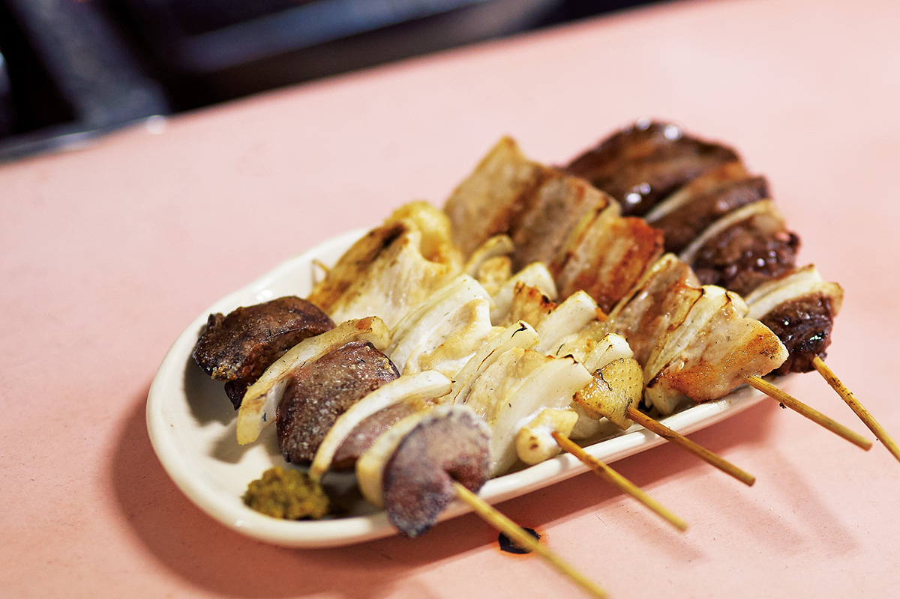
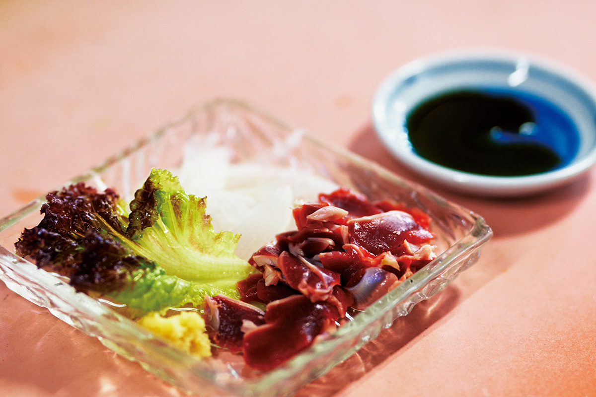
Главная черта якитори Нагато в том, что мясо на шпажке чередуется с луком. По словам хозяина, так впервые стали делать именно здесь: основательница заметила, что с луком вкуснее, и этот приём прижился во всём городе. Чесночный порошок на столах тоже появился сначала у них.
«Когда порошок только вышел, кто-то из рыбаков принёс банку и оставил: держите для меня. Здешние рыбаки любят всё новое. От них и пошла мода»
хозяин закусочной
Сразу после открытия стойку занимают местные, и в центре этой суеты всегда хозяева со своими улыбками.
«Вкусные якитори, сакэ и хорошее время. Больше ничего и не нужно»
хозяин закусочной
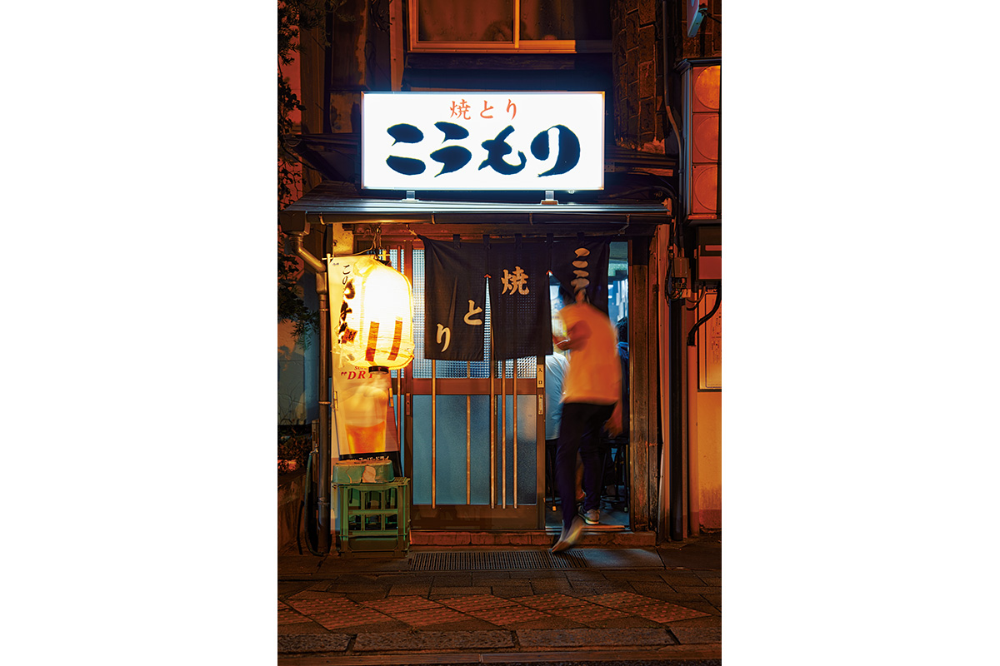
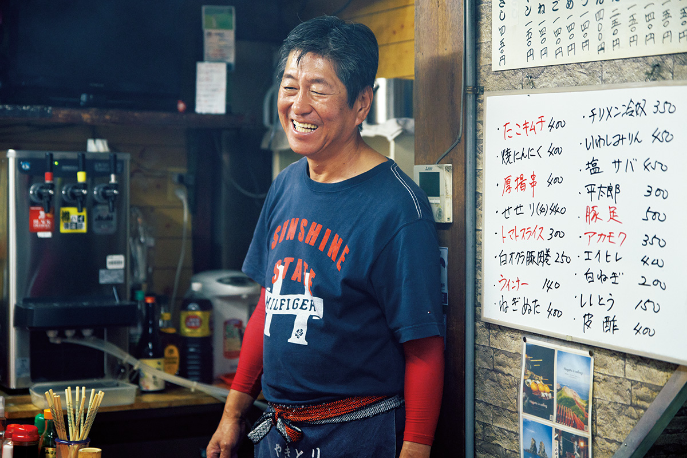
«Якитори Комори»
- Адрес
- префектура Ямагути, Нагато, Хигаси-Фукагава, 911
- Телефон
- +81 837-22-0617
- Часы работы
- 14:00–21:00
- Выходные
- вторник
Для всех
«Тикудзэн»: якитори без «красного фонаря»
Сегодня Нагато называет себя городом якитори номер один, и зайти в закусочную может кто угодно. Тридцать лет назад всё было иначе: якитори считались местом для мужчин с выпивкой, под красным бумажным фонарём.
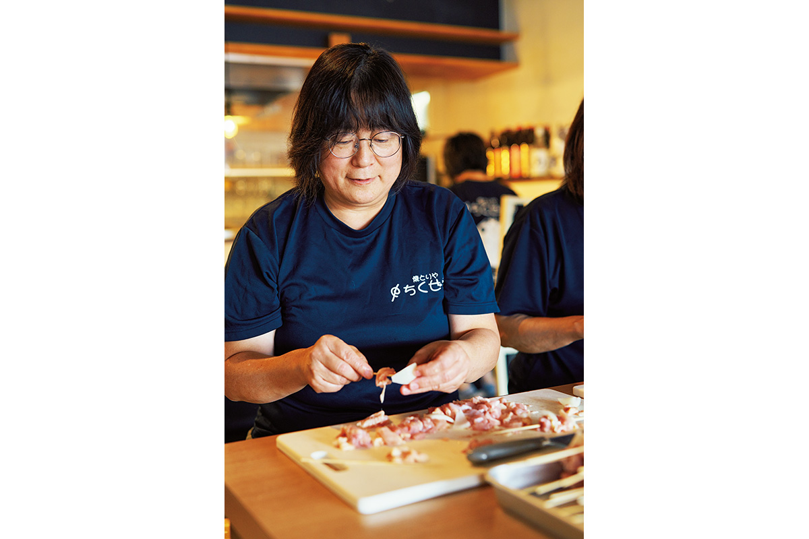
Когда будущей владелице «Тикудзэн» было чуть за двадцать и она сказала, что хочет открыть закусочную, родные были категорически против. Тогда она решила сделать заведение, куда легко зайти женщинам, семьям с детьми и тем, кто не пьёт. Вся команда «Тикудзэн» до сих пор женская. Кроме якитори здесь много авторских шпажек и закусок, чтобы за одним столом было что поесть и детям, и пожилым. Большая часть зала устроена на татами, а в одной из отдельных комнат столы расставлены так, чтобы можно было уложить младенца.
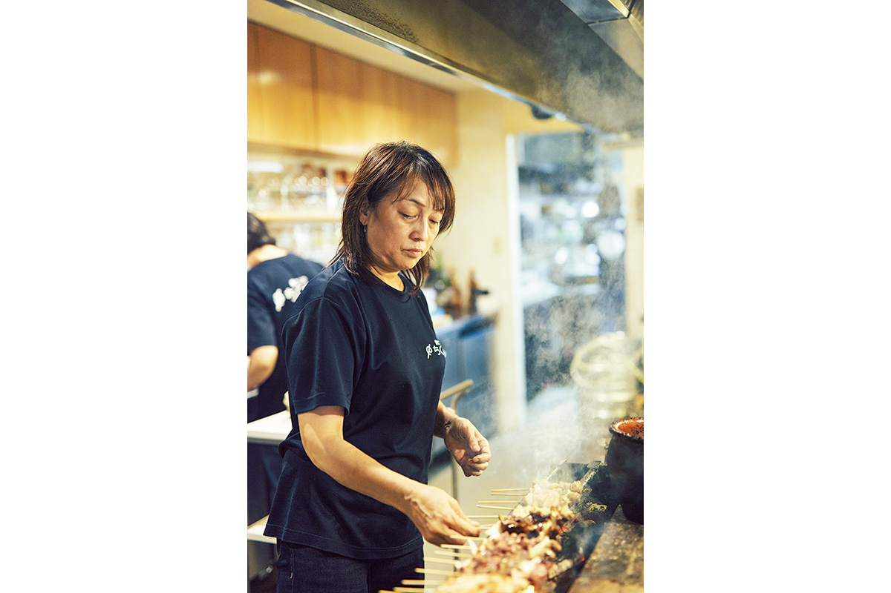
Первое заведение открылось в 1990 году. Сегодня у владелицы три закусочные «Тикудзэн», а ещё она ведёт или консультирует больше десятка других мест в городе: от баров до пекарни и столовой.
Секрет вкуса, по её словам, в том, что фермеры и повара здесь рядом. Курицу, забитую утром, к обеду уже нанизывают на шпажки, а отзывы гостей сразу доходят до фермеров. Мясо такое свежее, что даже те, кто не ест печень, признаются: «Печень из Нагато я ем».
По совету владелицы мы попробовали бедро «Тёсю куро-касива», редкой местной породы, которую подают лишь немногие заведения даже в Нагато. Таких кур растят дольше обычного, и мясо у деревенских пород часто бывает жёстким, но здесь оно мягкое, с приятной упругостью, а вкус с каждым укусом становится глубже.
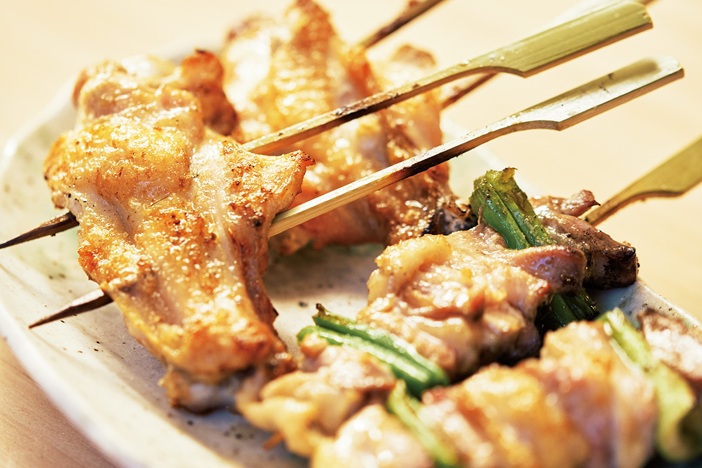
«Сейчас мы с друзьями пробуем делать для якитори свой уголь, тоже из Нагато. Рядом море, рядом горы, всё свежее. Нагато город как раз такого размера, в котором хорошо жить»
владелица «Тикудзэн»
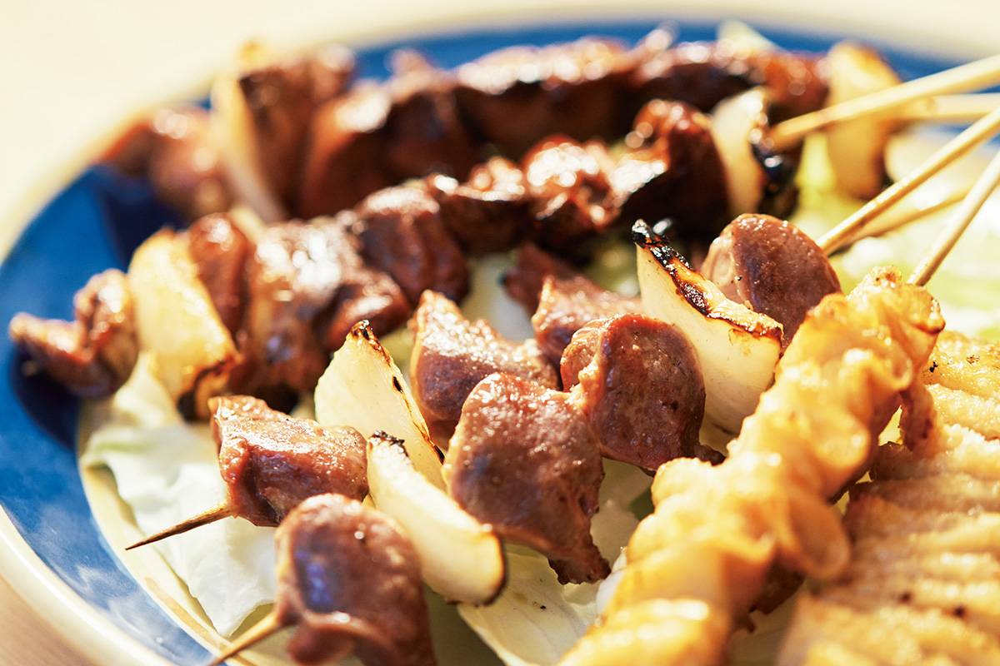
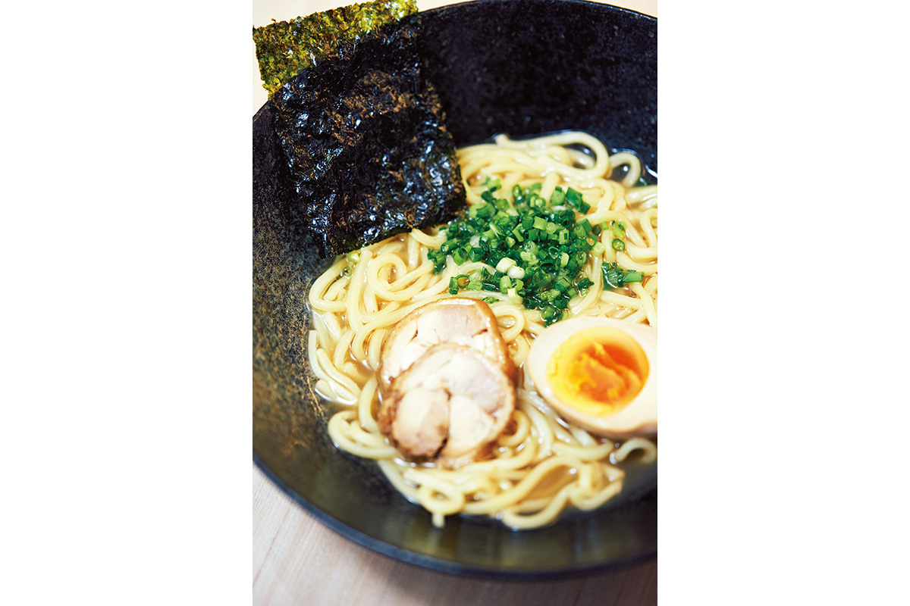
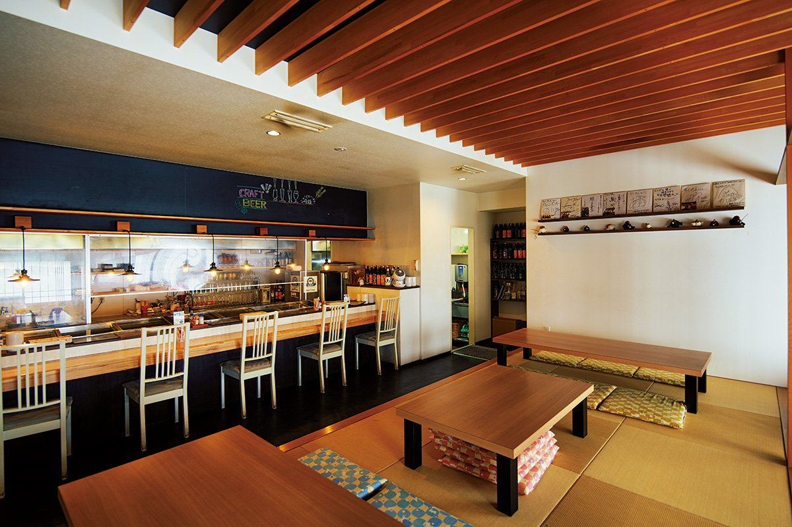
«Тикудзэн», главная закусочная
- Адрес
- префектура Ямагути, Нагато, Хигаси-Фукагава, 892-1, здание «Кин-но судзу», 2-й этаж
- Телефон
- +81 837-22-0735
- Часы работы
- 17:00–22:00
- Выходные
- воскресенье
Ферма
«Тёсю-дори»: курица на травах
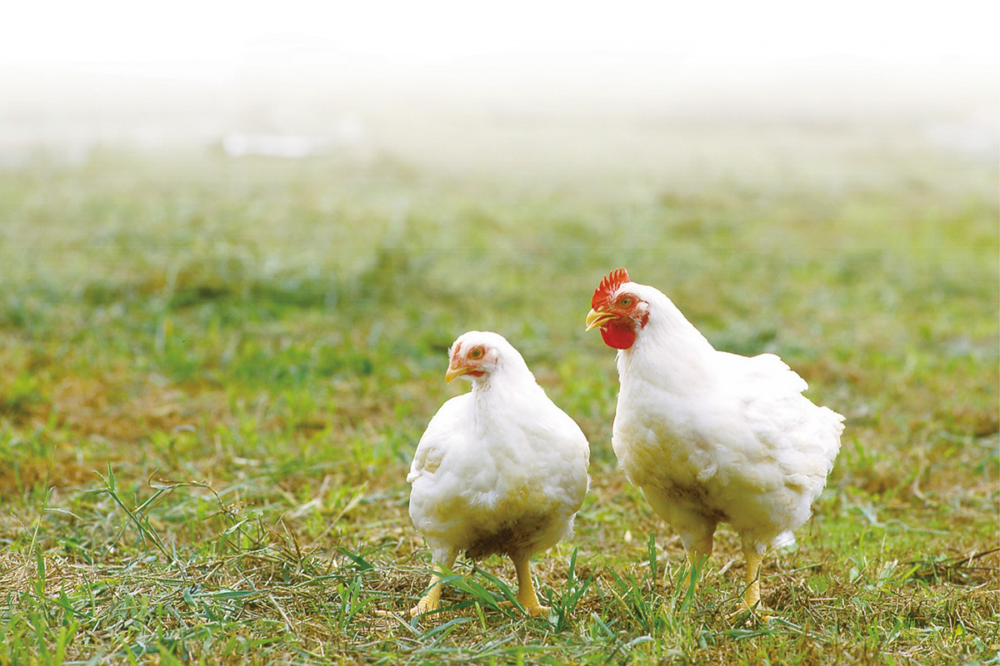
Символ города якитори это кооператив «Фукагава Ёкэй». Его основали ещё до войны производители яиц, а после войны, когда стране не хватало еды, кооператив начал выращивать птицу на мясо. Сегодня он сам выводит родительское поголовье, выводит цыплят, разделывает и перерабатывает мясо. «Тёсю-дори» это его собственная марка курицы с особыми требованиями к выращиванию.
Одно из хозяйств, которые растят «Тёсю-дори», ведёт компания «Кокко». Её глава представляет четвёртое поколение семьи птицеводов: сегодня в 30 птичниках у них около 1,1 млн кур. Антибиотики и синтетические противомикробные средства в корм не добавляют. Секрет вкуса в травах: в корм подмешивают тимьян, шалфей и розмарин и дают их птице всю жизнь, от цыплёнка до взрослой курицы. Мясо получается ароматнее, а куры здоровее. Рестораны Фукуоки, по его словам, хвалят «Тёсю-дори» за то, что у неё нет куриного запаха, а вкус насыщенный.
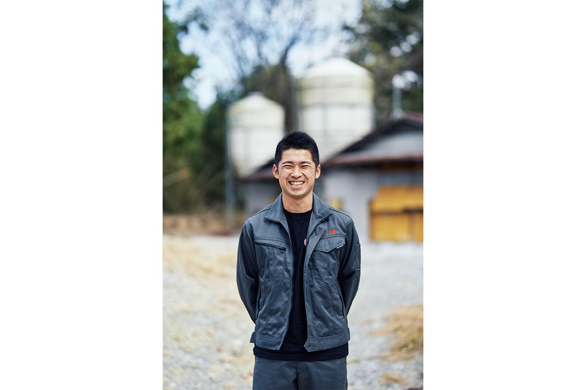
«Это живые существа, поэтому я стараюсь заходить в птичники как можно чаще. Когда курам жарко, они открывают клюв, когда холодно, сжимаются. Особенно важна ночная температура: смотрю на птиц и подстраиваю тепло»
глава компании «Кокко»
Свою курицу он покупает в магазине и сам пробует новые способы её готовить. Японцы больше любят бедро, но, по его словам, грудка «Тёсю-дори» на углях получается очень сочной. Птицеводов в округе становится меньше, и компания росла, принимая птичники у тех, кто уходил из дела. Его цель сохранить культуру птицеводства Нагато и открыть заведение, которое станет витриной местной еды.
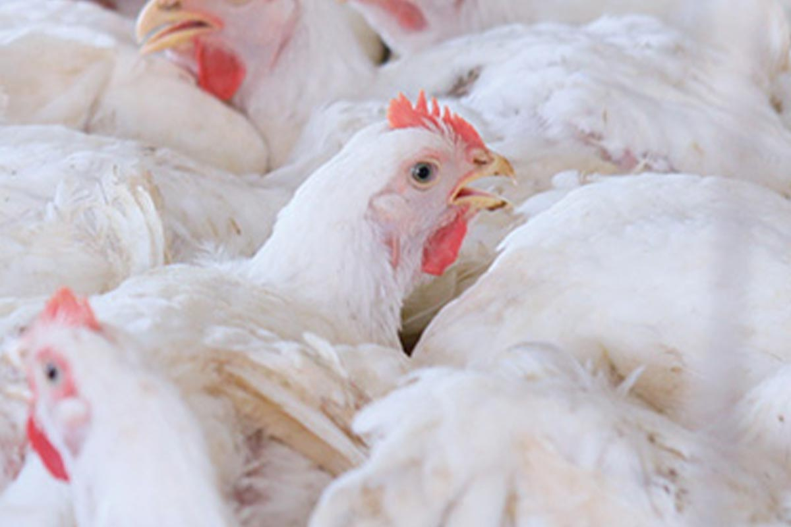
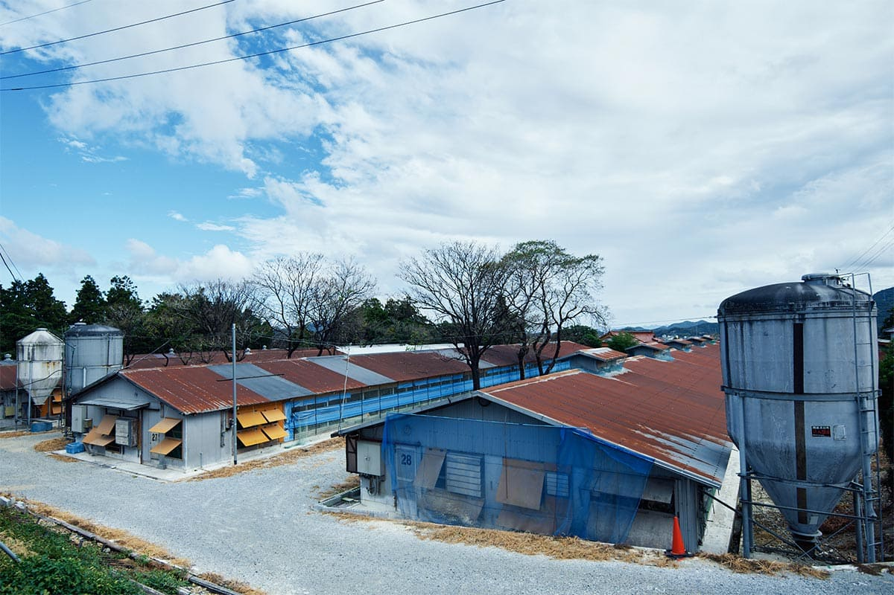
Компания «Кокко»
- Адрес
- префектура Ямагути, Нагато, Ниси-Фукагава, 2625
- Телефон
- +81 837-22-3378
- Сайт
- cocco-nagato.com
Порода
«Тёсю куро-касива»: курица от петуха из мифа
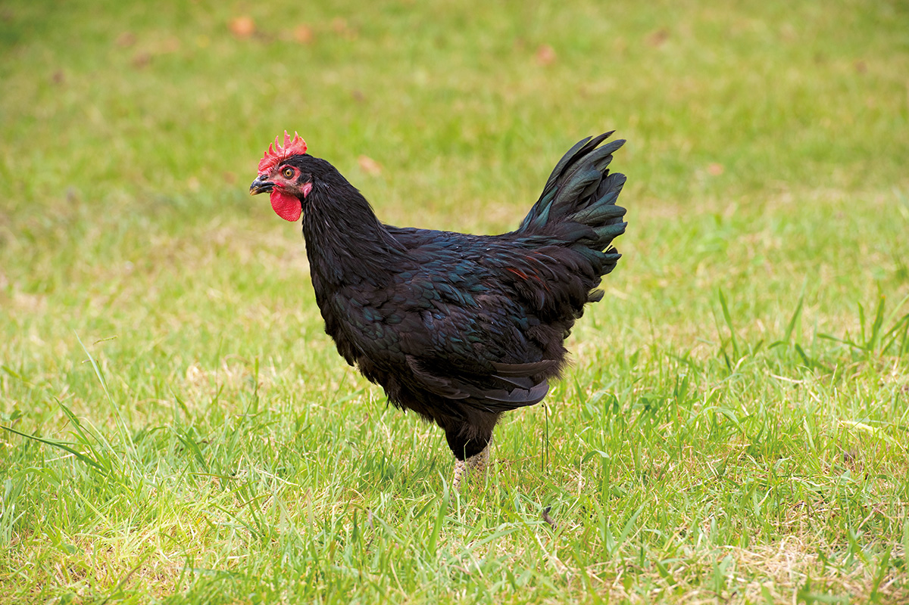
У «Тёсю куро-касива» чёрное перо с зелёным и фиолетовым отливом и гордый вид. Это собственная порода префектуры: её выводили около 15 лет на основе курокасивы, кур, которых в Ямагути держали с древности. Курокасиву считают «вечно поющими петухами» из мифа о богине солнца Аматэрасу: когда она спряталась в небесной пещере, боги заставили этих петухов кричать перед входом, чтобы выманить её. Сегодня порода охраняется государством как природный памятник.
Есть потомков природного памятника звучит странно, но вкус всё объясняет. Кур держат свободно, не больше 10 птиц на квадратный метр, и растят больше 80 дней, примерно вдвое дольше обычного бройлера. Мясо получается в меру плотным, с глубоким вкусом, который трудно забыть.
Около половины из 33 000 таких кур в год выращивает компания «Нагато Агрист», которая занимается породой уже около десяти лет. В корм, по словам её главы, добавляют рис, рисовые отруби, пшеницу и сою, выращенные в Нагато и по соседству: от корма зависит качество мяса. Куры много двигаются, поэтому жира в мясе мало, а вещества, отвечающего за вкус, много. В мясе к тому же много веществ, которые помогают при усталости и поддерживают печень.
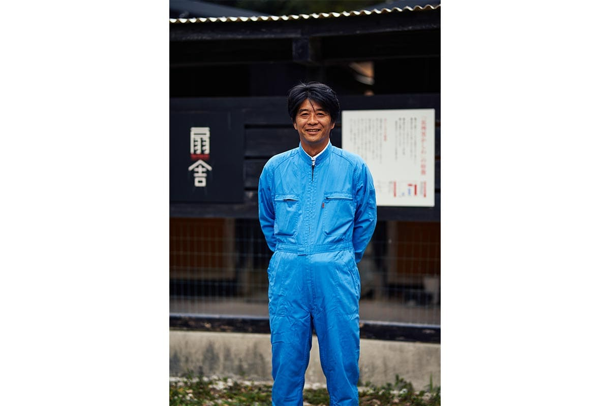
Птичник «Фан-фарм» построен веером: из центра видно всех птиц, за ростом легко следить, и у кур остаётся много места для бега. Птицу держат по возрастам, и в каждом отсеке куры бегают и клюют корм как хотят.
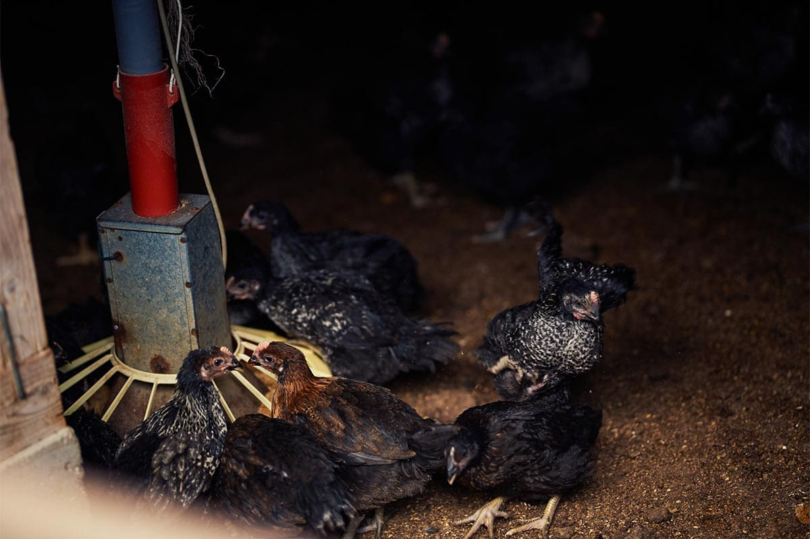
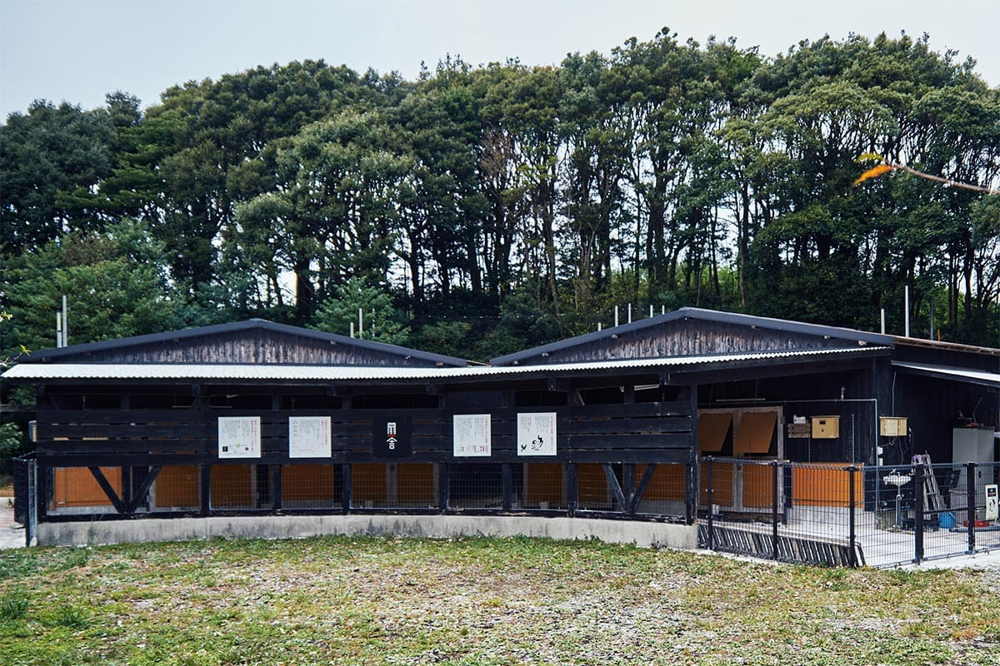
Порода редкая и дорогая, поэтому подают её немногие заведения.
«Мы хотим поднять долю местного корма, чтобы мясо стало дешевле и его больше ели в самой префектуре. Пусть этим вкусом гордится вся Ямагути»
глава «Нагато Агрист»
Компания «Нагато Агрист»
- Адрес
- префектура Ямагути, Нагато, Ниси-Фукагава, 2608-2
- Телефон
- +81 837-22-4671
Фото: Рюсукэ Хонда.